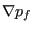

Keyword type: model definition
With this option the force-displacement relationship can be defined for springelements. There is one required parameter ELSET and there are optional parametersNONLINEAR and ORIENTATION. With the parameter ELSET the element set is referred to for which thespring behavior is defined. This element set should contain spring elementsonly. With the parameter NONLINEAR the user can specify thatthe behavior of the spring is nonlinear, default is a linearbehavior. Finally, the ORIENTATION parameter can be used to define a localorientation of the spring for SPRING1 and SPRING2 elements.
Please note that for a nonlinear behavior the (force,elongation) pairs have tobe entered in ascending order of the elongation. The elongation is defined asthe final length minus the initial length. The elongation can be negative,however, it should not be smaller than the initial length of thespring. Extrapolation in the force versus elongation graph is done in aconstant way, i.e. the force is kept constant. This leads to a zero tangentand may lead to a singular stiffness matrix. Therefore, the elongation rangeshould be defined large enough to avoid this type of problems.
For SPRING1 and SPRING2 elements the degree of freedom in which the springacts is entered immediately underneath the *SPRING card. For a SPRINGA elementthis line is left blank. This is done out of compatibility reasons withABAQUS. Now, CalculiX deletes any blank lines before reading the inputdeck. Therefore,the only way for CalculiX to know whether the first lineunderneath the *SPRING card contains degrees of freedom or spring constantinformation is to inspect whether the numbers on this line are integers orreals. Therefore, for the *SPRING card the user should painstakingly take carethat any real numbers (spring constant, spring force, elongation, temperature)contain a decimal point (``.'', which is a good practice anyway).
First line:
Second line for SPRINGA type elements: enter a blank line
Second line for SPRING1 or SPRING2 type elements:
Following line if the parameter NONLINEAR is not used:
Following sets of lines define the force-displacement curve if the parameterNONLINEAR is active:First line in the first set:
Use as many sets as needed to define complete temperature dependence.
Example: *SPRING,ELSET=Eall blank line 10.
defines a linear spring constant with value  for all elements in elementset Eall and all temperatures.
Example: *SPRING,ELSET=Eall,NONLINEAR 0.,0.,293. 10.,1.,293. 100.,2.,293. 0.,0.,393. 5.,1.,393. 25.,2.,393.
defines a nonlinear spring characterized by a force-displacement curve through(0,0),(10,1),(100,2) for a temperature of 293. and through (0,0),(5,1),(25,2)for a temperature of 393. The first scalar in the couples is the force, thesecond is the elongation of the spring. This spring behavior applies to allelements in element set Eall.Notice that for displacements outside the defined range the force is keptconstant. For instance, in the example above the force for an elongation of 3at a temperature of 293 will be 100.
Example files: spring1, spring2, spring3, spring4, spring5.